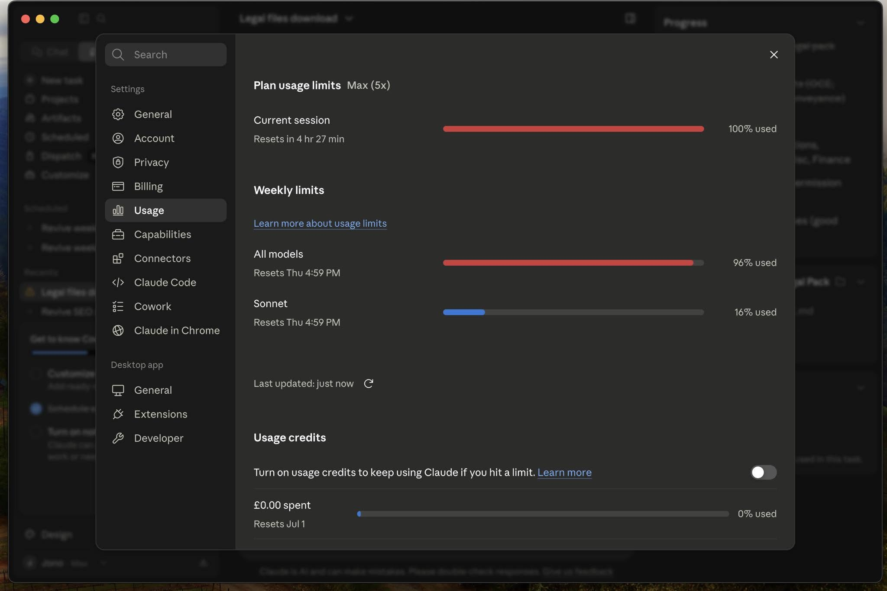
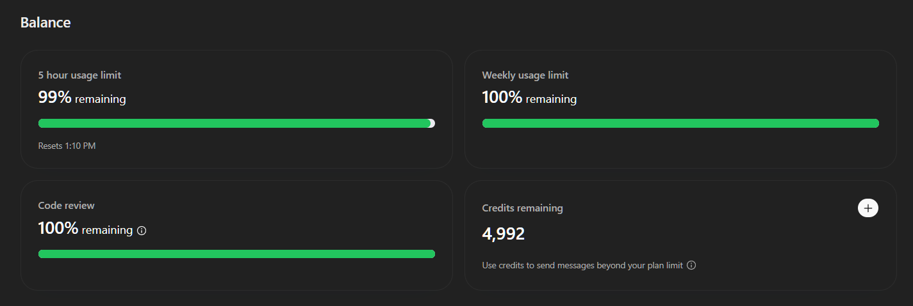
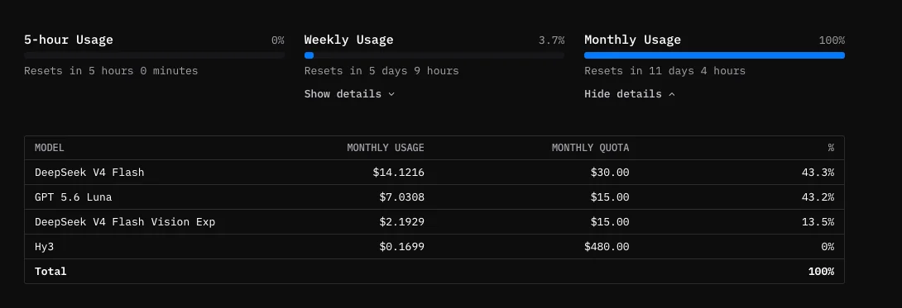

El contexto se agotó.



todos tienen un límite
sin formato,
esto es un cajón desastre
¿qué fue del scraper de Moodle?
El modelo no recordaba nada.
El disco sí.
un año y medio de esto
casi 7.000 notas · 7.459 fuentes · 430 commits
El contexto se agota.
El disco no.